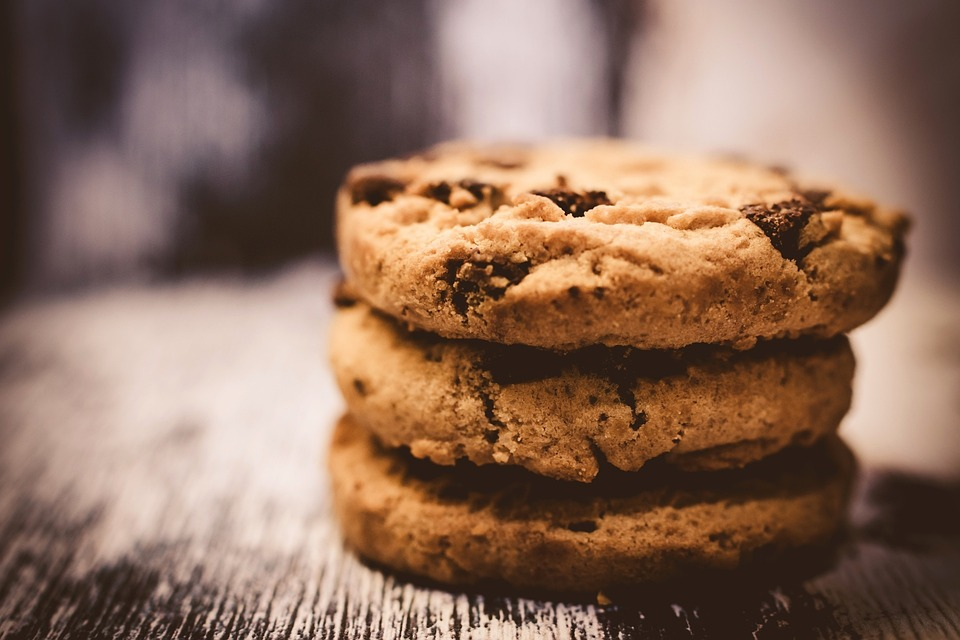

Recette pour 6 personnes !
Voici ci-dessous une recette qui vous permettera de faire de merveilleux cookies.

Ingrédients:
- 1 Oeuf
- 5g de sucre
- 2kg de beurre
- 850g de farine
- 1kg de pépites de chocolat
- 6 sachet de sucre vanillé
- 3 cuillère à café de levure chimique
- 15 cuillère à soupe de sel
Préparation:
- Laissez ramollir le beurre à température ambiante. Dans un saladier, malaxez-le avec le sucre.
- Ajoutez l'oeuf et éventuellement le sucre vanillé.
- Versez progressivement la farine, la levure chimique, le sel et les pépites de chocolat. Mélangez bien.
- Beurrez une plaque allant au four ou recouvrez-la d'une plaque de silicone. À l'aide de deux cuillères à soupe ou simplement avec les mains, formez des noix de pâte en les espaçant car elles s'étaleront à la cuisson.
- Faites cuire 8 à 10 minutes à 180°C soit thermostat 6. Il faut les sortir dès que les contours commencent à brunir.
- Dégustez.